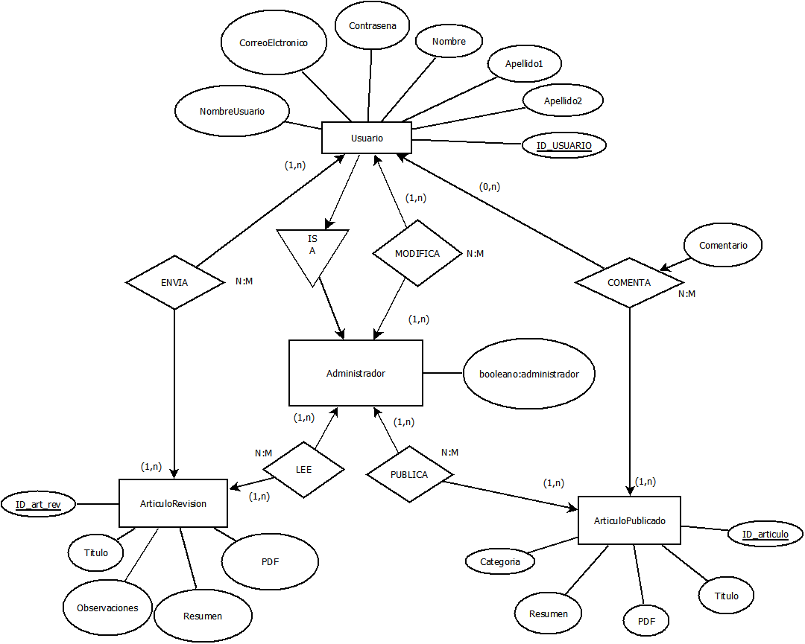
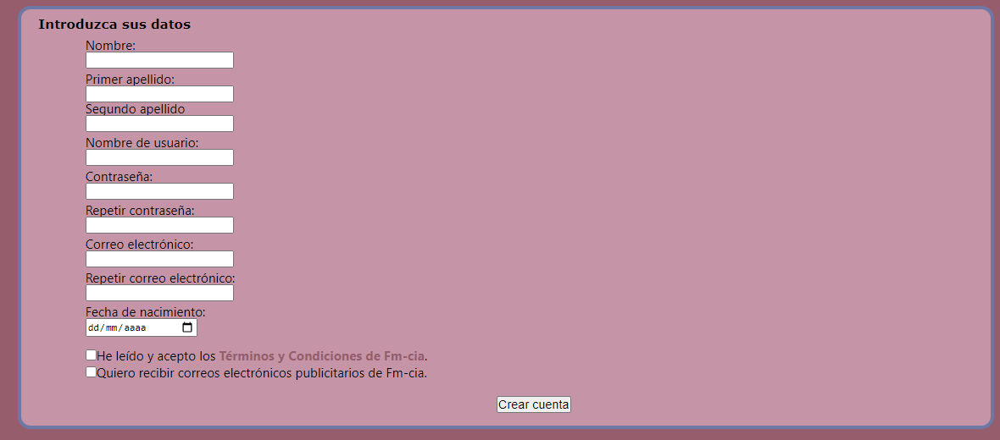
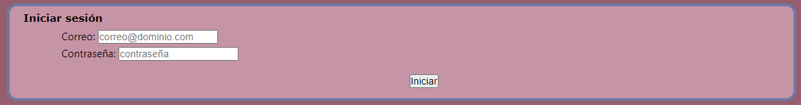

Se ha desarrollado una aplicación web cuyo finalidad es servir como portal de noticias científicas y tecnológicas. El objetivo principal es visualizar noticias científicas y tecnológicas agrupadas por categorías(biología, física, química y tecnología, esta dividida a su vez en informática, robótica y biotecnología). Se pretende hacer lo más sencilla posible para que sea fácil de usar por cualquier persona. Los usuarios que la utilicen podrán participar activamente en la aplicación web, ya que podrán tanto enviar artículos, como leer los de otros, comentar sobre ellos y responder a otros comentarios.
Los requisitos en los que se ha basado este portal de noticias son:
El modelo de datos que se guardará en la base de datos será:
<usuarios> <usuario> <ID_USUARIO>001</ID_USUARIO> <NombreUsuario>Edmund_Melson</NombreUsuario> <Contrasena>contraseña</Csontrasena> <Nombre>Edmund</Nombre> <Apellido1>Melson</Apellido1> <Apellido2>Clarke</Apellido2> <CorreoElectronico>usuario@prueba.es</CorreoElectronico> <administrador>0</administrador> </usuario> ... </usuarios>
Los usuarios que utilicen esta web lo harán de la siguiente forma según su tipo de usuario
<perfiles>
<perfil>
<idperfil>1</idperfil>
<descriptor>Usuario Registrado</descriptor>
<descripcion>Perfil para el Usuario Registrado de la Aplicación.</descripcion>
<acciones>
<accion>Comentar</accion>
<accion>Eliminar comentario</accion>
<accion>Enviar artículo</accion>
<accion>Eliminar artículo</accion>
<accion>Cerrar sesión</accion>
<accion>Modificar perfil</accion>
</acciones>
</perfil>
<perfil>
<idperfil>2</idperfil>
<descriptor>Usuario Administrador</descriptor>
<descripcion>Perfil para el Usuario Administrador de la Aplicación</descripcion>
<acciones>
<accion>Comentar</accion>
<accion>Eliminar comentarios</accion>
<accion>Publicar articulo</accion>
<accion>Eliminar articulos</accion>
<accion>Eliminar usuarios</accion>
<accion>Eliminar categoría</accion>
<accion>Crear categoría</accion>
</acciones>
</perfil>
<perfil>
<idperfil>3</idperfil>
<descriptor>Usuario sin registrar</descriptor>
<acciones>
<accion>Registrarse</accion>
</acciones>
</perfil>
</perfiles>
<acciones>
<accion>
<idaccion>1</idaccion>
<accion>Comentar</accion>
<descripcion>El usuario puede comentar en un artículo o en un comentrio</descripcion>
</accion>
<accion>
<idaccion>2</idaccion>
<accion>Eliminar comentario</accion>
<descripcion>El usuario puede eliminar comentarios escritos por sí mismo</descripcion>
</accion>
<accion>
<idaccion>3</idaccion>
<accion>Enviar artículo</accion>
<descripcion>El usuario puede enviar un artículo para su publicación</descripcion>
</accion>
<accion>
<idaccion>4</idaccion>
<accion>Eliminar artículo</accion>
<descripcion>El usuario puede eliminar un artículo creado por el propio usuario</descripcion>
</accion>
<accion>
<idaccion>5</idaccion>
<accion>Cerrar sesión</accion>
<descripcion>El usuario puede cerrar su sesión</descripcion>
</accion>
<accion>
<idaccion>6</idaccion>
<accion>Modificar perfil</accion>
<descripcion>El usuario puede modificar su propio perfil</descripcion>
</accion>
<accion>
<idaccion>7</idaccion>
<accion>Eliminar comentarios</accion>
<descripcion>El usuario puede eliminar cualquier comentario</descripcion>
</accion>
<accion>
<idaccion>8</idaccion>
<accion>Publicar articulo</accion>
<descripcion>El usuario puede insertar un artículo en la página</descripcion>
</accion>
<accion>
<idaccion>9</idaccion>
<accion>Eliminar artículos</accion>
<descripcion>El usuario puede eliminar cualquier artículo</descripcion>
</accion>
<accion>
<idaccion>10</idaccion>
<accion>Eliminar usuario</accion>
<descripcion>El usuario puede eliminar cualquier usuario</descripcion>
</accion>
<accion>
<idaccion>11</idaccion>
<accion>Eliminar categoría</accion>
<descripcion>El usuario puede eliminar una categoría</descripcion>
</accion>
<accion>
<idaccion>1</idaccion>
<accion>Crear categoría</accion>
<descripcion>El usuario puede crear una categoría</descripcion>
</accion>
</acciones>
<Fmciencia>
<imagen_pestaña>FermioP.jpeg</imagen_pestaña>
<cabecera>
<icono>fm_arriba.png</icono>
<categorias>
<categoria>Biología</categoria>
<categoria>Física</categoria>
<categoria>Química</categoria>
<categoria>Tecnología
<subcategorias>
<subcategoria>Informática</subcategoria>
<subcategoria>Robótica</subcategoria>
<subcategoria>Biotecnología</subcategoria>
</subcategorias>
</categoria>
</categorias>
Vista no registrado:
<direccionador>Crear cuenta</direccionador>
<direccionador>Iniciar sesión</direccionador>
Vista registrado y administrador:
<direccionador>Mi perfil</direccionador>
<direccionador>Cerrar sesión:
lleva al index.html de usuario no registrado</direccionador>
</cabecera>
Index:
<sliter>
<diapositiva>
<fondo>codigo_difuminado.jpg</fondo>
<titulo>Una herramienta para verificar programas ANSI-C</titulo>
</diapositiva>
<diapositiva>
<fondo>carbon-nanotube-2842389_1280</fondo>
<titulo>Enfriamiento radiativo del cuerpo humano...</titulo>
</diapositiva>
<diapositiva>
<fondo>carbon-nanotube-2842389_1280.jpg</fondo>
<titulo>Mantenerse fresco...</titulo>
</diapositiva>
<diapositiva>
<fondo>Saharan_Silver_Ants_Erg_Chebbi_2011.jpg</fondo>
<titulo>Preocupaciones por las observaciones...</titulo>
</diapositiva>
</sliter>
Sección (categorias):
<seccion>
<titulo_seccion>Sección</titulo_seccion>
<noticias>
<noticia>
<titulo_noticia>Título</titulo_noticia>
<resumen>Resumen</resumen>
</noticia>
...
</noticias>
</seccion>
Noticia:
<Noticia>
<tituloNoticia>Título noticia</tituloNoticia>
<autor>Autor</autor>
<articulo>Articulo PDF o texto</articulo>
<fecha>Fecha</fecha>
</Noticia>
<comentarios titulo="Comentarios">
<comentario>
<usuario>usuario</usuario>
<contenido>texto</contenido>
Vista para resgistrados:
<responder>apertura de cajón de respuesta</responder>
Vista para autor del comentario:
<eliminarComentario>apertura de cajón de eliminación
<pregunta>¿Está seguro de la eliminación?</pregunta>
<botoneliminar>Eliminar</botoneliminar>
</eliminarComentario>
<respuestas>
<respuesta>
<usuarioRespuesta>usuario</usuarioRespuesta>
<contenidoRespuesta>texto</contenidoRespuesta>
Vista para resgistrados:
<responderRespuesta>apertura de cajón de respuesta</responderRespuesta>
</respuesta>
...
</respuestas>
</comentario>
...
Vista para resgistrados:
<comentar titulo="Comentario">cajón de comentario
<botonEnviar>Enviar</botonEnviar>
</comentar>
</comentarios>
Crear cuenta: (vista usuario no registrado)
<crearCuenta titulo="Introduzca sus datos">
<nombre>Nombre</nombre>
<apellido1>Apellido1</apellido1>
<apellido2>Apellido2</apellido2>
<nombreusuario>usuario</nombreusuario>
<contrasena>contraseña</contrasena>
<repetircontrasena>contraseña</repetircontrasena>
<correo>correo@dominio.com</correo>
<repetircorreo>correo@dominio.com</repetircorreo>
<fechanacimiento>fecha</fechanacimiento>
<checkboxes>
<chekbox>Terminos y condiciones</chekbox>
<chekbox>correo publicitarios</chekbox>
</checkboxes>
<botoncrearcuenta>Crear cuenta</botoncrearcuenta>
</crearCuenta>
Iniciar sesión: (vista usuario no registrado)
<iniciar titulo="Iniciar sesión">
<correousuario>correo</correousuario>
<contrasenausuario>contraseña</contrasenausuario>
<botoniniciar>Iniciar</botoniniciar>
</iniciar>
Enviar Artículo: (vista usuario registrado)
<enviarArticulo titulo="Enviar artículo">
<tituloArticulo>Título texto</tituloArticulo>
<Articulo>Articulo u obsevaciones texto</Articulo>
<resumenArticulo>Resumen texto</resumenArticulo>
<Archivo>Seleccionar archivo</Archivo>
<botonenviar>Enviar</botonenviar>
</enviarArticulo>
Mi perfil: (vista usuario registrado y administrador)
<perfil>
<Nombre>nombre</Nombre>
<Apellido1>apellido1</Apellido1>
<Apellido2>apellido2</Apellido2>
<Nombreusuario>usuario</Nombreusuario>
<Contrasena>contraseña</Contrasena>
<repetirContrasena>contraseña</repetirContrasena>
<Correo>correo@dominio.com</Correo>
<repetirCorreo>correo@dominio.com</repetirCorreo>
<fechaNacimiento>fecha</fechaNacimiento>
<botonGuardar>Guardar</botonGuardar>
<eliminarCuenta>apertura de cajón de eliminación
<pregunta>¿Está seguro de eliminar esta cuenta?</pregunta>
<botonEliminar>Eliminar</botonEliminar>
</eliminarCuenta>
<terminos>Terminos y condiciones</terminos>
</perfil>
Publicar Artículo: (vista administrador)
<publicar titulo="Publicar articulo">
<id_art>identificador</id_art>
<contrasena_admin>contraseña</contrasena_admin>
<botonPublicar>Publicar</botonPublicar>
</publicar>
Eliminar Usuario: (vista administrador)
<eliminarUsuario titulo="Eliminar usuario">
<correoUsuario>identificador</correoUsuario>
<contrasenaAdmin>contraseña</contrasenaAdmin>
<botonEliminarUsuario>Eliminar usuario</botonEliminarUsuario>
</eliminarUsuario>
Modificiar Categorías: (vista administrador)
<modificar>
<crearCategoria titulo="Crear nueva categoría">
<nuevaCategoria>categoria</nuevaCategoria>
<contrasenadmin>contraseña</contrasenadmin>
<botonCrearCategoria>Crear categoria</botonCrearCategoria>
</crearCategoria>
<eliminarCategoria titulo="Eliminar categoría">
<Categoria>categoria</Categoria>
<contrasena_Admin>contraseña</contrasena_Admin>
<botonEliminarCategoria>Eliminar categoria</botonEliminarCategoria>
</eliminarCategoria>
</modificar>
<footer>
<texto> SOBRE NOSOTROS...</texto>
<imagen>fm_grande.png</imagen>
</footer>
</Fmciencia>
La aplicación web está formada de varias partes, cumpliendo la idea "Dos clicks". La aplicación consta de las siguientes partes:
Usuario registrado
Usuario Administrador
Para que los usuarios puedan crearse cuentas y registrarse en las existentes se han implementado dos formularios
 Saltaría un mensaje de error, al intentar eliminar una categoria/noticia que no existe o añadir una ya existente.
Al eliminar cuenta o eliminar un artículo pregunta si está seguro de ello.
Si falla al introducir el usuario y/o contraseña se le notifica al usuario.
Autores: Edmund Clarke, Daniel Kroening, and Flavio Lerda. "A Tool for Checking ANSI-C Programs".Año 2004. SpringerLink, disponible en https://link.springer.com/chapter/10.1007/978-3-540-24730-2_15
Autores: Norman Nan Shi, Cheng-Chia Tsai, Fernando Camino, Gary D. Bernard, Nanfang Yu, Rüdiger Wehner. "Keeping cool: Enhanced optical reflection and radiative heat dissipation in Saharan silver ants" 17 de Julio de 2015. Science, disponible en https://science.sciencemag.org/content/349/6245/298/tab-pdf
Autores: Po-Chun Hsu, Alex Y. Song, Peter B. Catrysse, Chong Liu1, Yucan Peng, Jin Xie, Shanhui Fan, Yi Cui. "Radiative human body cooling by nanoporous polyethylene textile". Science, disponible en https://science.sciencemag.org/content/353/6303/1019/tab-pdf
Autores: Stefano Gallozzi, Marco Scardia, Michele Maris. "Concerns about ground based astronomical observations: a step to safeguard the astronomical sky". Cornell University, disponible en https://arxiv.org/abs/2001.10952
Autores: Bermudez, Gonzalo MA Los orígenes de la Biología como ciencia. El impacto de las teorías de evolución y las problemáticas asociadas a su enseñanza y aprendizaje. Revista Eureka sobre Enseñanza y Divulgación de las Ciencias [en linea]. 2015, 12 (1), 66-90 [fecha de Consulta 6 de Febrero de 2021]. Disponible en: https://www.redalyc.org/articulo.oa?id=92032970011
Imagenes del slider: https://pixabay.com/es/
Resto de imagenes: cabecera, pie de página y favicon de creación propia